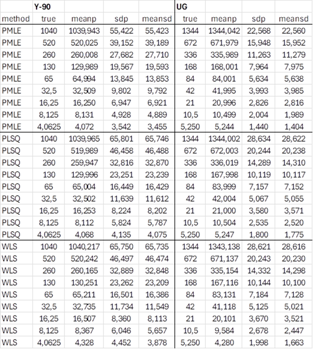

5.19. PMLE procedure for linear unfolding¶
5.19.1. PMLE in UncertRadio¶
The procedure for Poisson MLE (PMLE) requires that the dependent quantities in unfolding, e.g. gross counts of a decay curve, are Poisson-distributed. As the latter are applied as net count rates for the other methods, these net count rate values are converted to gross counts within the program. The gross counts of a decay curve
\(N_{b,i} = \left( R_{b,i} + R_{0,i} + R_{bl} \right) \cdot t_{m}\) ; \(u\left( N_{b,i} \right) = \sqrt{N_{b,i}}\)
are considered as non-correlated. \(t_{m}\) must have the same value for all measured count rates, otherwise the shape of the gross counts decay curve would be disturbed.
If for instance an Y-90 decay curve shall be fitted, the corresponding model equation for the net count rate representation
\(R_{b,i} = y_{1} \cdot X_{1}\left( t_{i} \right)\)
converts to the model of the PMLE fit:
\(N_{b,i} = \left( y_{1} \cdot X_{1}\left( t_{i} \right) + y_{2} \cdot 1 \right) \cdot t_{m}\)
This requires inferring a second fitting contribution with the fitting parameter \(y_{2}\) and \(X_{2}\left( t_{i} \right) = 1\). The parameter \(y_{2}\) represents the sum of a background and a blank value, \(\left( R_{0,i} + R_{bl} \right)t_{m};\) it will be fitted by the PMLE procedure and may end up with a value which can deviate from the value \(\left( R_{0,i} + R_{bl} \right)t_{m}\) known from measurement.
Features:
This procedure needs to have one fitting parameter more than the other procedures used for fitting net count rate decay curves. In UncertRadio it can therefore be applied only if not more than two physical components are to be determined. Both of these two components should have the property that their associated curves should be different from being constant or quasi-constant within time. If one of these components represents the contribution of a radionuclide with a rather large half-live, such that the decay curve fails to show a decrease, the fitting procedure cannot differentiate between this contribution and that of \(\left( R_{0,i} + R_{bl} \right)t_{m}\). In such a case the PMLE-procedure cannot be used.
Furthermore, the PMLE procedure can at present not be applied, if another fitting parameter is used with the status „fixed“, as is the case for a Sr measurement where a Sr-85 tracer was added to the sample.
The PMLE procedure is not selectable in a case with too few countings compared to the number of parameters to be fitted.
Applying this procedure:
The data within the dialog “Input of decay curve“ are to be handled in the same way as for the other fitting procedures; nothing changes there.
Has a project already be established for the use with e.g. the WLS procedure, the program has already sufficient information about the components to be fitted and is able to decide whether the above-mentioned criteria for applying PMLE are fulfilled. If the criteria are not fulfilled, the selection of the PMLE procedure in the model dialog “model of decay curve“ is prevented
Is the PMLE procedure selectable within the model dialog, the procedure,
if selected, is processed in the same manner as for the other
procedures. Only within the view of the fit result ( ), gross
counting rates are displayed instead of net count rates.
), gross
counting rates are displayed instead of net count rates.
5.19.2. Basic information about PMLE¶
For decay curves of gross counts, which are Poisson-distributed, the Poisson MLE (PMLE) fitting method is the better one compared to weighted least squares (WLS), if the count numbers are rather small. This is supported by corresponding test results given at the end of Section 5.4.2. Unfortunately, only non-linear unfolding procedures can be applied. For this purpose, the Levenberg-Marquardt-method was applied as it is implemented in the Matlab routine Lm, published by H. P. Gavin (2022). The Matlab code was converted to Fortran and extended for the application to PMLE:
PMLE with its special definition of the chi-square (see Chi-square options) requires a modification of the Levenberg-Marquardt (LM) matrix algebra,
For stabilizing the fitting („penalized fitting“) an additional Chi-square term is included, which shall prevent the fitting parameters from moving too far from their start values during the non-linear iteration.
Referring to the nomenclature used by H. P. Gavin in his paper, the following table gives a short information about the extensions of his mathematical treatment implemented here. In the first column, the equation numbers used by Gavon are cited. The main difference between Levenberg-Marquard formulae (left column) and those for the PMLE modifications (right column) consists in the applied covariance matrices \(W_0\) (left column) and \(W_1\) and \(W_2\) (right column). The additional term \(p_f(p-p_c)^T \cdot W_c \cdot (p-p_c)\) serves for stabilizing the fit. \(J\) designates the Jacobi-Matrix of the first partial derivatives of the fitting function \(f\) with respect to the parameters \(p\).
Eq. |
LM-procedure by Gavin, with stabilization included |
LM-PMLE-procedure by Gavin, modified for PMLE and stabilisation |
\(\chi^{2}_c(p) = \chi^{2}(p) + p_f(p-p_c)^T \cdot W_c \cdot (p-p_c)\) |
\(\chi^2{2}_c(p)=\chi^{2}_{LP} + p_f(p-p_c)^T \cdot W_c \cdot (p-p_c)\) |
|
\(\frac{\partial \chi^{2}_c}{\partial p} = \frac{\partial \chi^{2}}{\partial p} + p_f 2 (p-p_c)^T \cdot W_c\) |
\(\frac{\partial \chi^{2}_c}{\partial p} = \frac{\partial \chi^{2}_{LP}}{\partial p} + p_f 2 (p-p_c)^T \cdot W_c\) |
|
\([J^T W_0 J + p_f W_c] \cdot h_{gn} = J^T W_0 (y-f(p))\) |
\([J^T W_2 J + p_f W_c] \cdot h_{gn} = J^T W_1 (y-f(p))\) |
|
\([J^T W_0 J + p_f W_c + \lambda \cdot diag(J^T W_0 J + p_f W_c)] h_{lm}=\) |
\([J^T W_2 J + p_f W_c + \lambda \cdot diag(J^T W_2 J + p_f W_c)] h_{lm}=\) |
|
(13+) |
\(=J^T W_0 (y-f(p))\) |
\(=J^T W_1 (y-f(p))\) |
\(\rho_i(h_{lm})=\frac{\chi^2(p) - \chi^2(p+h_{lm})} { h^T_{lm} {\lambda\cdot diag(J^T W_0 J + p_f W_c)} h_{lm} + J^T W_0 d }\) |
\(\rho_i(h_{lm})=\frac{\chi^2(p) - \chi^2(p+h_{lm})} { h^T_{lm} {\lambda\cdot diag(J^T W_2 J + p_f W_c)} h_{lm} + J^T W_0 d }\) |
|
(16+) |
\([J^T W_0 d] = J^T W_0 (y-f(p)) - p_f W_c (p-p_c)\) |
\([J^T W_1 d] = J^T W_1 (y-f(p)) - p_f W_c (p-p_c)\) |
\(W_0 = diag(1/y_i)\) |
\(W_1 = diag(1/f_i)\) |
|
\(W_c = diag(1/u^2(p_{ci}))\) |
\(W_2 = diag(y_i/f^2_i)\) |
Test with MC simulations
The performance of the procedure shall be demonstrated for a Y-90 decay curve with 9 measurements (example project vTI-Y90-16748_BLW_V2_EN.txp). This project was modified by increasing the gross count number of the 9th point from a shorter counting duration (28200 s) to the duration of the other points (72000 s). A separate Fortran routine was used for the necessary MC simulations. The model for PMLE fitting of the gross counts \(N_{b,i}\) is given by \(y_1\): parameter of the Y-90-contribution; \(y_2\): parameter für the sum UG of background counts and the net blank counts (72000 s):
\(X_1(t_i)\) means the Y-90 decay corrections for 9 times \(t_i\). For start values of counts \((y_1,y_2) = (1040,1344)\) , 9 “true” values of \(N_{b,i}\) were calculated according to the latter equation. After replacing them by Poisson distributed random counts, these were fitted resulting in values \((y^{'}_1,y^{'}_2)\). This step was repeated \(10^6\) times. This allowed to extract statistical information, separately for \((y^{'}_1)\) and \((y^{'}_2)\):
true |
given start value |
meanp |
mean of the MC-values |
sdp |
MC standard deviation of the values estimating the dispersion |
meansd |
mean of the standard deviations estimated by the fitting routine for each of the \(10^6\) fits |
The sequence of steps described so far is repeated 8 times by dividing the start values by two each time. All this was executed three times, for the fitting methods PMLE (non-linear) and PLSQ and WLS (linear). The statistical data obtained are presented in the following table. Overall, the given true values are quite well reproduced by meanp; for smaller count numbers only for the WLS procedure some deviations are observed. A good agreement of the values for sdp (“real dispersion”) and meansd (standard deviation estimated by the fitting procedure) means statistical consistency. It is observed that again the WLS procedure is less consistent for lower count numbers. The evaluation of this test also demonstrates that the PMLE method yields lower but statistically consistent estimates of the parameters describing counts.
